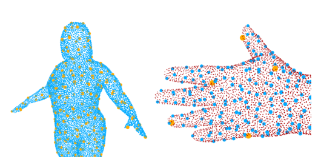
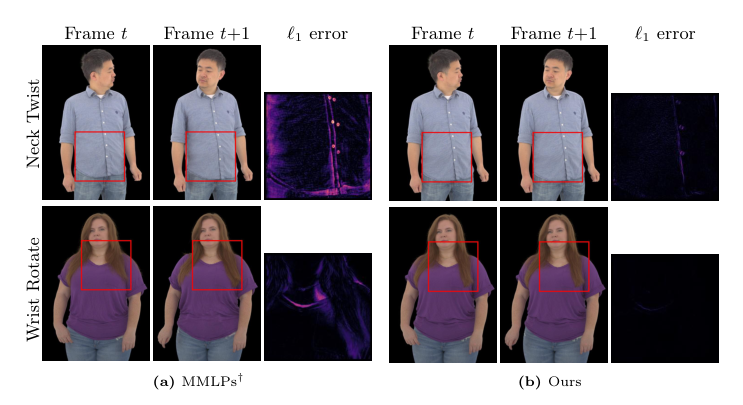
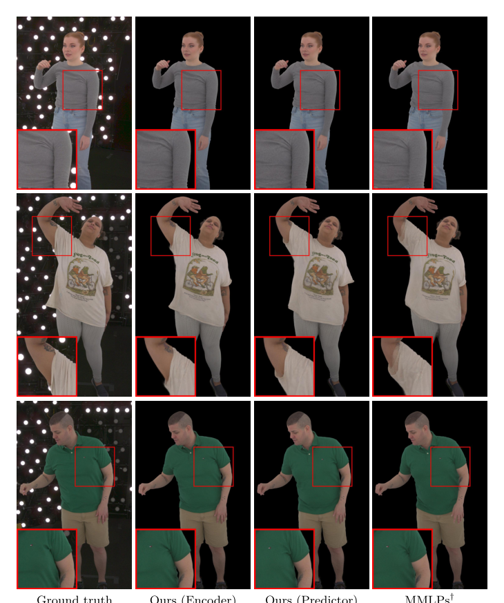

Autoregressive：3D 高斯头像的外观预测
简单摘要
学习高保真逼真的人物虚拟表示在VR、远程呈现和视频游戏等沉浸式体验中具有广泛应用。长时采集中普遍存在姿态-外观歧义:同一骨骼姿态在不同时刻可对应显著不同的外观。鲁棒的化身模型必须同时满足表征高频视角依赖效果和在驱动信号回访相似姿态时保持时间稳定性。3DGS的点基结构为人体化身提供了灵活建模复杂变形的能力。然而提高模型容量会引入第二个挑战:训练数据中的虚假相关性——高容量模型可记忆此类偶然细节,造成新姿态序列下外观异常波动。本文提出基于层次化点表示的3DGS化身模型,同时解决虚假姿态相关和姿态-外观歧义。

核心创新
1. 提出基于蒙皮权重的局部化姿态条件化策略,每个空间MLP仅以其锚点位置的局部姿态信息为条件,从根本上切断无关姿态参数之间的虚假长程依赖。
2. 设计逐帧外观潜变量编码器,以多视角投影至模板网格获得的UV纹理为输入,提供紧凑的姿态对齐外观观测。
3. 训练基于Transformer的外观预测器,在测试时根据历史姿态窗口回归预测下一帧潜变量,实现驱动时无UV纹理条件下的时序平滑外观演化。
4. 层次化点表示架构与局部化条件化和时序潜变量机制协同工作,同时实现高视觉保真度和时间稳定性。
技术细节

围绕 技术总览，我们首先对表示和条件化策略进行高级概述（ ）。然后，我们描述如何在每个锚点构建局部姿势特征，以减轻虚假姿势-外观相关性并减少过度拟合（亚秒：方法）。我们使用许多用于人体头像重建的常用损失来训练我们的模型。作者这样设计，是为了把这一节的输入、约束和输出关系讲清楚。
3 方法
围绕 3 方法，我们首先对表示和条件化策略进行高级概述（ ）。然后，我们描述如何在每个锚点构建局部姿势特征，以减轻虚假姿势-外观相关性并减少过度拟合（亚秒：方法）。接下来，我们介绍我们的外观建模方法，包括训练期间学习的每帧潜在变量以及用于获取它的编码器（ ）。作者这样设计，是为了把这一节的输入、约束和输出关系讲清楚。
3.1 概述
给定驾驶姿势参数和面部嵌入，我们的模型输出一个表示为一组 3D 高斯的姿势头像。我们遵循 的分层表示，使用一组稀疏锚点和空间分布的 MLP，从每个锚点输入预测高斯参数（用于可视化）。我们使用许多用于人体头像重建的常用损失来训练我们的模型。作者这样设计，是为了把这一节的输入、约束和输出关系讲清楚。
$$ \mathcal{L}= \lossL{1} + \lossterm{lpips} + \lossterm{opac} + \lossterm{scale} + \lossterm{cpt} + \lossterm{KL}. $$
这条式子是在定义一个可直接计算的中间量：右侧把相对位置、方向、权重或比例关系组合起来，左侧则把这个组合结果记成后续模块要反复使用的变量。
3.2 本地化姿态参数
围绕 3.2 本地化姿态参数，在完整姿势向量上调节每个锚点可能会引起远处表面区域参数之间的虚假相关性——头部旋转与特定的衬衫皱纹图案相关（ ）。对于模板网格上的锚点，我们跟踪从其蒙皮权重到姿势参数的连接，并构造一个二进制掩模 ，其中当且仅当任何非零蒙皮权重影响 时。类似地，我们构造一个蒙版，如果锚点的纹理坐标位于面部区域内，则设置该蒙版。作者这样设计，是为了把这一节的输入 lazy' decoding='async' />
$$ \vect{\hat{\theta}}_i = \vect{m}^\theta_i \odot \vect{\theta}, \quad \vect{\hat{\phi}}_i = m^\phi_i \vect{\phi}, $$
放在“方法”这一部分看，这条式子重点不是孤立地罗列符号，而是交代 vect theta i 如何承接前面的输入并把结果交给后续步骤。
3.3 外观造型
围绕 3.3 外观造型，长捕捉序列——尤其是穿着僵硬的衣服或松散的头发——通常会表现出明显的姿势——外观模糊性。为了明确地将姿势与随时间变化的外观解耦，我们引入了可学习的每

3.4 外观预测
为了在没有 UV 纹理输入的情况下在测试时驱动化身，我们学习了一个外观预测器，它可以从运动历史中推断每个锚点的外观潜伏。我们使用因果自回归转换器对潜在动态进行建模，该转换器将先前的身体姿势和前一帧的外观代码作为上下文，并预测当前帧的外观代码（请参阅参考资料）。除非另有说明，我们使用 ，它提供了足够的时间上下文，同时很好地概括了未见过的序列。作者这样设计，是为了把这一节的输入、约束和输出关系讲清楚。
最后，我们在训练和测试期间将带有钳位的 PCA（如 中所示）应用于预测的外观代码。我们监督外观预测，同时损失地面实况和零初始化预测的潜在代码。为了鼓励时间稳定性，我们还对潜在代码输出的速度、加速度和加加速度的有限差分导数应用惩罚。
实验结论
我们在六个广泛的长形圆顶捕捉中评估了我们的方法，涵盖了一系列难度和动态外观效果。我们提供了所有六次捕获的定量和定性结果。在训练集上，我们的方法取得了最好的分数，这表明添加的结构（局部调节和外观潜伏）可以实现训练数据的高质量拟合。
编码器提供最接近真实情况的上限，而预测器在没有纹理输入的情况下产生时间平滑、合理的外观演化。
4.1 结果
我们提供了所有六次捕获的定量和定性结果。我们的评估重点是（i）每种方法对训练数据的过度拟合能力，（ii）我们的编码器泛化到看不见的纹理的能力。
4.1.1 定量的
我们报告标准重建指标，包括 PSNR、SSIM 和感知相似性指标 LPIPS。在训练集上，我们的方法取得了最好的分数，这表明添加的结构（局部调节和外观潜伏）可以实现训练数据的高质量拟合。在测试集上，我们带有外观预测器的完整管道总体表现最佳。
| — | Test | Train | — | ||||
|---|---|---|---|---|---|---|---|
| — | PSNR | SSIM | LPIPS | PSNR | SSIM | LPIPS | #Params |
| Ours | best!4032.99 | best!400.939 | best!400.063 | best!4036.21 | best!400.950 | best!400.053 | 192.1M |
| MMLPs | best!0032.34 | best!000.937 | best!000.066 | best!1536.13 | best!400.950 | best!150.054 | 187.2M |
| nRFGCA | best!1532.74 | best!400.939 | best!150.065 | best!0035.94 | best!400.950 | best!000.055 | 155.9M |
| Ours (re-init. 30) | best!0033.85 | best!000.942 | best!000.060 | -- | -- | -- | 192.1M |
| Ours (encoder) | best!0034.78 | best!000.946 | best!000.056 | -- | -- | -- | 189.8M |
| — | Test | Train | ||||
|---|---|---|---|---|---|---|
| — | PSNR | SSIM | LPIPS | PSNR | SSIM | LPIPS |
| Ours | best!4032.99 | best!400.939 | best!400.063 | best!0036.21 | best!000.950 | best!000.053 |
| Ours w/o local pca | best!0032.86 | best!000.938 | best!000.064 | best!1536.23 | best!150.950 | best!150.053 |
| Ours w/o local pose | best!1532.87 | best!150.938 | best!150.064 | best!4036.29 | best!400.951 | best!400.052 |
4.1.2 定性的
说明了我们的局部姿势调节如何减少虚假 0928v1/figure6_full.png'  如果把这篇论文放回问题背景里看，它真正的价值在于：我们提出了一个 3D 高斯 Splatting 化身模型，其空间 MLP 主干以姿势和潜在外观为条件。这说明作者不是只补一个局部模块，而是在重新组织问题该怎样被解决。 最能支撑这个判断的，还是实验给出的证据：结果 我们提供了所有六次捕获的定量和定性结果。换句话说，这些设计并不只是概念上更完整，而是实实在在改变了最终结果。 当然，它离真正成熟的方案还有距离：虽然我们的外观预测器在大多数情况下会产生稳定且可信的结果，但仍然存在一些限制。后续更值得继续推进的方向，是 因此，未来的工作应侧重于更强的姿态-外观解缠、远程阴影效果的显式建模以及改进外观预测的测试时间初始化。理解评价